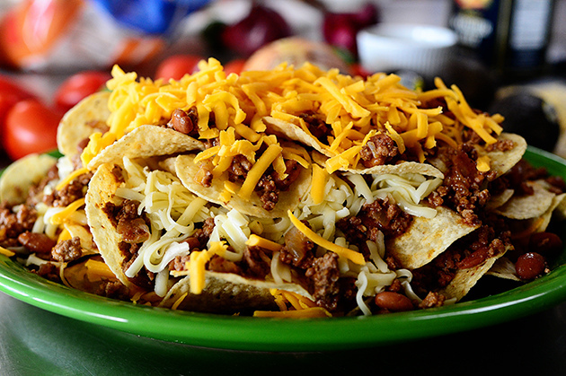
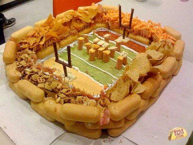
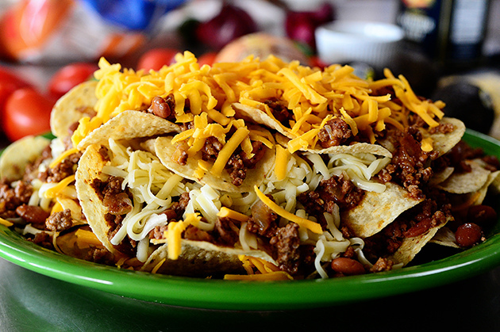
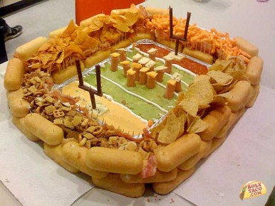

Food
- Nachos

- Chips and Salsa

- Football Food

- A good football team

Nachos are a good food to have during a football party, if you dont have nachos are you really at a football party

Nachos are a good food to have during a football party, if you dont have nachos are you really at a football party


Photo and Recipe credits: http://www.coupons.com/thegoodstuff/super-bowl-party-cocktails/
Ingredients: 3 oz. Silver Tequila 1 oz. Blue Curacao 1 1/2 oz. Fresh Squeezed Lime Juice 1/2 oz. Cointreau 1/2 oz. Simple Syrup Kosher Salt for Rim
Seahawks Super Shot
Photo and Recipe credits: http://simplydarrling.com/2015/01/seahawks-dual-layered-shot/
Ingredients: 4 oz. Blue Curacao 8 oz. Vodka 8 oz. Green Skittles
Seahawks Sangria
Photo and Recipe credits:http://poshlittledesigns.com/2014/01/30/make-superbowl-xlvii-sangria/
Ingredients: 1/4 cup fresh squeezed lemon juice. 4 key limes. Slice two into rounds, and 2 into quarters for the drink’s garnish. 1/4 of a honeydew melon cut into 1” rounds and then cut into football shapes using a mini football cookie cutter (optional) 1 cup fresh blueberries washed. 1 bottle of your favorite Riesling or Chardonnay. Use Riesling if you like your beverages a little sweet. 1/2 cup Cointreau. 2 bottles Wild Lime DRY Soda chilled. Ice.